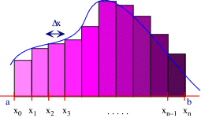
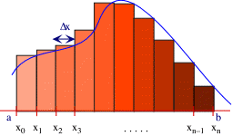
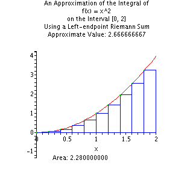
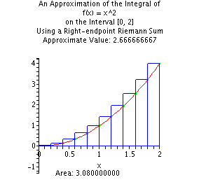
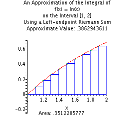
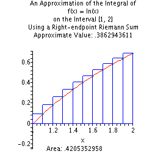
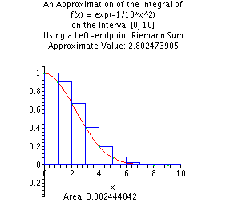
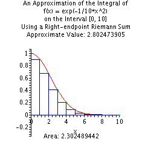

Due: 1/26/2014
Objective:
Become more familiar with flow control protocols.
Develop basic familiarity with implementation of static functions.
Description:
Analytical integration of functions is not always possible or easy. For a number of reasons numerical integration is a useful development. This project involves development of the most simplistic type of numerical integration. Our main objective is to develop a code to numerically integrate functions. More specifically, this project aims to develop a numerical integration method of a quadratic function defined by: f(x) = ax^2+bx+c
Program expects input from the user by the way of keyboard.
Start point of the integration
End point of integration
Number of partitions
Three values (a, b, and c) that define a quadratic function
The output should be directed to the screen.
Left Riemann sum
Right Riemann sum
Your program should contain at least three functions: one for the left sum, one for right sum, and one for quadratic function evaluation
The three functions should be named: leftRiemannSum, rightRiemannSum, and quadratic
Left
Riemann sum:
Right Riemann sum:


1. f(x) = x2

Interval: [0,
2]
Partitions: 10
Left Riemann Sum: 2.28
Right Riemann Sum:
3.08
Exact Integral: 8/3
2. f(x) = ln(x)

Interval: [1,
2]
Partitions: 10
Left Riemann Sum: 0.351220577
Right
Riemann Sum: 0.4205352958
Exact Integral: 2*ln(2)-1
3. f(x) = e(-x^2/10)

Interval:
[0,10]
Partitions: 10
Left Riemann Sum: 3.302444042
Right
Riemann Sum: 2.302489442
Exact Integral: Not known
Estimated
Integral: 2.802473905